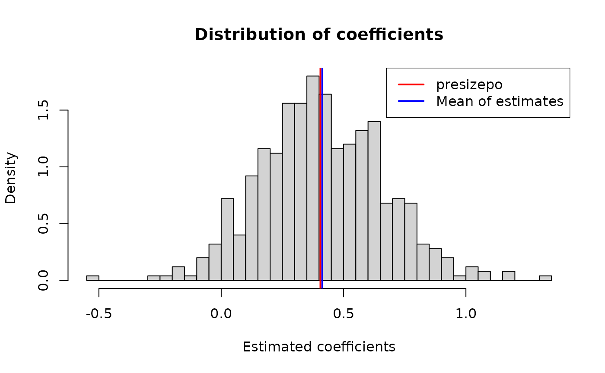

presizepo.Rmd
library(presizepo)presizepo is precision-based (confidence-interval width)
sample size calculation approach for the log common odds ratio (cOR)
from a proportional-odds model. Two predictor types are supported:
se_binary_po() and
n_precision_binary_po();se_cont_po() and n_precision_cont_po().For both, two calculation methods are available via
method:
"whitehead" - Whitehead’s (1993) formula."ologit" (default) - fits a weighted proportional-odds
model directly to the anticipated distribution and reads the standard
error off the observed information matrix, following White,
Marley-Zagar, Morris, Parmar, Royston & Babiker (2023).The two methods are similar for small effects and diverge as the anticipated effect size grows.
presizepo offers two approaches for calculating the
standard error of the log odds ratio.
Whitehead (1993) originally derived his formula for hypothesis testing sample size calculations with specified probability of Type I error () and power (). In this setting the sample size can be generally formulated as (see Julious (2004))
where is the anticipated effect size and is the variance of the test statistic. Whitehead (1993) showed that for a binary predictor and allocation ratio (treatment:control),
where is the anticipated log OR and is the average probability for outcome category across treatment arms, weighted by allocation Thus, the standard error for the anticipated log OR is
From this relationship, one can solve for the sample size needed to achieve a target confidence interval width.
White et al. (2023) classify this as the NN (Local) method, which is based on a “local” assumption (small treatment effects) and uses the variance computed at the null hypothesis. However, for precision-based sample size calculations where you condition on an anticipated effect size, this same formula provides the information structure regardless of whether you’re explicitly doing hypothesis testing.
For a continuous predictor one can adapt Whitehead’s formula to:
where adjusts for information loss when the predictor is correlated with other covariates in the model.
Implementation details: For a continuous predictor, the average probabilities are computed by integrating the outcome probabilities across the distribution of using a fixed quantile grid approach with 2000 points from .
White et al. (2023) distinguish between three statistical approaches for hypothesis testing and sample size calculations:
"ologit"
method.presizepo implements both the NN (Whitehead) and AA
methods, which are appropriate for precision-based calculations
(confidence interval width), where we condition on the anticipated
effect size.
For binary predictors the AA algorithm is:
For continuous one adapts to:
The Gauss-Hermite nodes and weights are scaled to match via the transformation: , where are the standard Hermite nodes.
Suppose the anticipated distribution of outcome categories in the control arm is:
pc <- c(0.15, 0.10, 0.10, 0.10, 0.10, 0.45)and we anticipate a cOR of 1.7 for the experimental arm relative to control.
se_binary_po() returns the standard error of the log
cOR, and a confidence interval for the cOR itself, at a given total
sample size n:
se_binary_po(pc, OR = 1.7, n = 200, method = "ologit")
#> $conf
#> [1] 0.95
#>
#> $se_log_OR
#> [1] 0.2561491
#>
#> $OR
#> [1] 1.7
#>
#> $lower_OR
#> [1] 1.028998
#>
#> $upper_OR
#> [1] 2.808558
#>
#> $method
#> [1] "ologit"
se_binary_po(pc, OR = 1.7, n = 200, method = "whitehead")
#> $conf
#> [1] 0.95
#>
#> $se_log_OR
#> [1] 0.2539772
#>
#> $OR
#> [1] 1.7
#>
#> $lower_OR
#> [1] 1.033387
#>
#> $upper_OR
#> [1] 2.796628
#>
#> $method
#> [1] "whitehead"More commonly we want the sample size needed to achieve a target
precision, expressed as the ratio of the upper to lower confidence limit
for the OR (ratio_UL). n_precision_binary_po()
computes this, here for ratio_UL=3.
n_precision_binary_po(pc, OR = 1.7, ratio_UL = 3, method = "ologit")
#> $n
#> [1] 168
#>
#> $conf
#> [1] 0.95
#>
#> $OR
#> [1] 1.7
#>
#> $method
#> [1] "ologit"
#>
#> $lci_OR
#> [1] 0.9814954
#>
#> $uci_OR
#> [1] 2.944486So a sample size of 168 would be needed to constrain the cOR’s confidence interval to a 3-fold ratio between its limits.
For a continuous predictor x, the anticipated
outcome-category distribution is instead specified at
x = 0, along with the cOR per unit of x
(OR) and the SD of x (sd_x):
p0 <- c(0.10, 0.15, 0.15, 0.20, 0.20, 0.10, 0.10)
se_cont_po(p0, OR = 1.5, sd_x = 0.5, n = 200, method = "ologit")
#> se_log_OR OR lower_OR upper_OR
#> 0.2496151 1.5000000 0.9196414 2.4466059An R2 argument allows for the predictor’s effective
information to be reduced when other covariates explain some of its
variance (e.g. when adjusting for baseline covariates). For example, if
other covariates explain 30% of the variance of x, set
R2 = 0.3:
# Without adjustment for other covariates (R2 = 0)
se_cont_po(p0, OR = 1.5, sd_x = 0.5, n = 200, R2 = 0, method = "ologit")
#> se_log_OR OR lower_OR upper_OR
#> 0.2496151 1.5000000 0.9196414 2.4466059
# With other covariates explaining 30% of variance of x (R2 = 0.3)
se_cont_po(p0, OR = 1.5, sd_x = 0.5, n = 200, R2 = 0.3, method = "ologit")
#> se_log_OR OR lower_OR upper_OR
#> 0.2983471 1.5000000 0.8358681 2.6918123Notice that the SE increases when R2 = 0.3 (and
correspondingly the confidence interval widens), reflecting the loss of
information due to confounding or correlation with other covariates.
OR vs
OR_sd
The effect size can be specified in two ways:
OR: cOR per raw unit of
x
OR_sd: cOR per SD of
x
These are equivalent ways of specifying the same effect. For example,
with sd_x = 0.5, a cOR per raw unit of
log(1.5) is equivalent to a cOR per SD of
log(sqrt(1.5):
# OR: log OR per raw unit
se_cont_po(p0, OR = 1.5, sd_x = 0.5, n = 200, method = "ologit")
#> se_log_OR OR lower_OR upper_OR
#> 0.2496151 1.5000000 0.9196414 2.4466059
# OR_sd: log OR per SD (equivalent when sd_x = 0.5)
se_cont_po(p0, OR_sd = sqrt(1.5), sd_x = 0.5, n = 200, method = "ologit")
#> se_log_OR OR lower_OR upper_OR
#> 0.2496151 1.5000000 0.9196414 2.4466059delta vs
delta_sd
Similarly, the reported change in x can be expressed in
two ways:
delta: change in raw units of
x
delta_sd: change in SDs of
x
For example, with sd_x = 0.5:
# delta = 0.5 raw units vs delta_sd = 1 SD (equivalent when sd_x = 0.5)
se_cont_po(p0, OR = 1.5, sd_x = 0.5, n = 200, delta = 0.5, method = "ologit")
#> se_log_OR OR lower_OR upper_OR
#> 0.1248076 1.2247449 0.9589793 1.5641630
se_cont_po(p0, OR = 1.5, sd_x = 0.5, n = 200, delta_sd = 1, method = "ologit")
#> se_log_OR OR lower_OR upper_OR
#> 0.1248076 1.2247449 0.9589793 1.5641630In the first example, we express the change in x in a
raw unit increase of
.
This is the same, as when we express it by a ‘one SD’ increase
delta_sd=1.
n_precision_cont_po() gives the sample size for a target
CI-width ratio, expressed for the OR per delta units of
x. It supports the same OR/OR_sd
and delta/delta_sd options:
# Using OR and delta
n_precision_cont_po(p0, OR = 1.5, sd_x = 0.5, ratio_UL = 3,
delta = 1, method = "ologit")
#> $n
#> [1] 166
#>
#> $OR
#> [1] 1.5
#>
#> $method
#> [1] "ologit"
#>
#> $lci_OR
#> [1] 0.8660254
#>
#> $uci_OR
#> [1] 2.598076
# Using OR_sd and delta_sd (specifying effect and change per SD)
n_precision_cont_po(p0, OR_sd = sqrt(1.5), sd_x = 0.5, ratio_UL = 3,
delta_sd = 1, method = "ologit")
#> $n
#> [1] 42
#>
#> $OR
#> [1] 1.224745
#>
#> $method
#> [1] "ologit"
#>
#> $lci_OR
#> [1] 0.7071068
#>
#> $uci_OR
#> [1] 2.12132To validate that the theoretical standard errors match empirical
results, we can simulate data from a proportional-odds model and compare
the empirical standard error with the one predicted by
se_cont_po().
library(MASS)
# Set up simulation parameters
set.seed(1234)
p0 <- c(0.10, 0.15, 0.15, 0.20, 0.20, 0.10, 0.10)
OR <- 1.5 # odds ratio per unit of x
beta <- log(OR) # log OR for data generation
sd_x <- 0.5
n_sim <- 500 # number of simulations
n_obs <- 200 # observations per simulation
# Predicted SE from presizepo
pred_se <- se_cont_po(p0, OR = OR, sd_x = sd_x, n = n_obs, method = "ologit")
cat("Predicted SE (from presizepo):", pred_se[["se_log_OR"]], "\n")
#> Predicted SE (from presizepo): 0.2496151
# Simulation: fit the model many times and collect beta estimates
set.seed(1234)
beta_hats <- numeric(n_sim)
for (i in seq_len(n_sim)) {
# Generate predictor x from N(0, sd_x^2)
x <- rnorm(n_obs, mean = 0, sd = sd_x)
# Generate ordinal outcome from proportional-odds model
# Compute cumulative probabilities: P(Y <= k)
cutpoints <- qlogis(cumsum(p0)[-length(p0)])
eta <- beta * x
p_cumulative <- plogis(outer(cutpoints, eta, "-"))
# Convert to category probabilities: P(Y = k)
p_cat <- rbind(p_cumulative[1, ],
diff(p_cumulative, margin = 1),
1 - p_cumulative[nrow(p_cumulative), ])
# Generate outcomes: sample category for each observation
y <- apply(p_cat, 2, function(p) sample(seq_along(p0), size = 1, prob = p))
# Fit proportional-odds model
fit <- suppressWarnings(
polr(factor(y) ~ x, method = "logistic", Hess = TRUE)
)
# Extract coeff
beta_hats[i] <- unname(coef(fit))
}
# Empirical SE
emp_se <- sd(beta_hats)
cat("Empirical SE (from simulation):", emp_se, "\n")
#> Empirical SE (from simulation): 0.2521338
cat("Ratio (empirical / presizepo):", emp_se / pred_se[["se_log_OR"]], "\n")
#> Ratio (empirical / presizepo): 1.01009The empirical SE from the simulation should closely match the predicted SE, validating the theoretical calculations. The ratio should be close to 1.
Distribution of beta estimates:

Julious, S.A. (2004) Tutorial in biostatistics - Sample sizes for clinical trials with Normal data. Statistics in Medicine, 23 (12). pp. 1921-1986.
Whitehead, J. (1993). Sample size calculations for ordered categorical data. Statistics in Medicine, 12(24), 2257-2271.
White, I. R., Marley-Zagar, E., Morris, T. P., Parmar, M. K., Royston, P., & Babiker, A. (2023). A simple software-based approach to sample size calculation for ordinal outcomes. Statistical Methods in Medical Research. doi:10.1177/1536867X231162228